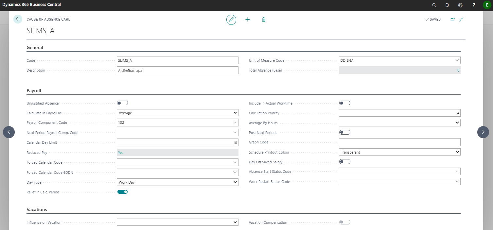
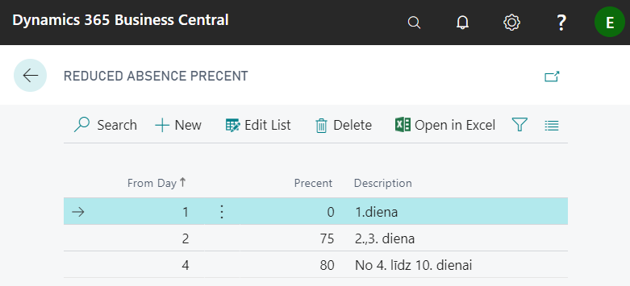

Causes of absence
To register an absence, causes of absence codes are necessary. All reason codes are initially imported into the system via the configuration package and are listed Causes of absence. The code card can be opened by clicking on the required line of code and pressing the buttons on the toolbar Actions - New document - Card.
It is not recommended to do any changes to the reason codes and their settings.

Tab General
| Field name | Description |
|---|---|
| Code | Freely defined absence code. |
| Description | Description of absence. |
| Unit of Measure Code | Selects from the list. |
| Total Absence (Base) | The system shows how many times this absence is registered. Taking into account that this is a standard Microsoft field that is not maintained, it always shows zero. |
Tab Payroll
| Field name | Description |
|---|---|
| Unjustified Absence | Sign of unjustified absence. |
| Calculate in Payroll as | Selects from the list how the absence is calculated: 1. Average – the calculation period is taken first in the previous 6 months, if not, then in the previous 12 months. If not, the program checks Payroll Setup, is there a check mark in the field Use Curr. Month in Avg. Gain if Period not Full. If this field is not checked, then the average of the minimum wage is calculated; 2. Keep salary separated – the calculated basic salary will be retained for the selected period, the amount being divided into another salary component; 3. Keep Salary – for the selected period nothing changes in the calculation of the basic salary (for example: justified absence); 4. Prepayment – pays basic salary as Prepayment for the selected period (vacation ahead); 5. No Salary – no salary is calculated for the selected period (for example: unpaid vacation, unjustified absence); 6. Without Relief – Does not calculate salary and benefits (for example: sick leave B); 7. Blank – overrides in the payroll calculation. |
| Payroll Component Code | Indicate the corresponding salary component. |
| Next Period Payroll Comp. Code | Indicate the component if the payment for the next period is allocated to another component. |
| Calendar Day Limit | Indicates the number of days of cause of absence (for example, sick leaves, business trips), to warn of exceeding the limits. |
| Reduced Pay | Indicates reduced rates by day (for example.: how sick leave is paid). Click on the field link to set.  |
| Forced Calendar Code | Selects the default calendar according to which the calculation for a specific absence will be performed. Vacations have their own default calendar. |
| Forced Calendar Code 6DDN | Selects the default calendar to calculate for a specific absence according to a six-day calendar. |
| Day Type | Indicates the type of absence calculation by days (periods): - Work Day; - Calendar Day; - Manual - the number of days does not depend on the period. |
| Relief in Calc. Period | A checkmark in the field indicates that the relief will be calculated this month. If there is no check mark, it will be carried forward. (for example: long vacations for teachers). |
| Include in Actual Worktime | If there is a check mark, then the days are considered as actually worked (for example: a business trip). |
| Calculation Priority | Indicates the sequence number of the cause of absence code in the chain of salary calculation activities - the lower the number, the higher the priority. Priority can be given to both - salary components and reasons for absence. If the salary component comes from an absence record (for example: compensation of unused vacation.), then priority is taken from the cause of absence. |
| Average By Hours | You can choose between: leave blank, Only SDL ( for the totaled working time), All. |
| Post Next Periods | A check mark is placed if part of the next period of the temporary absence is booked to the expenses of the next period. |
| Graph Code | Indicates a freely chosen code that will be used to indicate this type of absence in the schedule printouts. |
| Schedule Printout Colour | Selects the color in which the absence days are marked in the schedule printout. |
| Day Off Saved Salary | Used when an employee is given a holiday that must be paid according to the principle “Keep salary”, but not included in real time (for example: blood donor days). |
| Absence Start Status Code | Specifies the status code that will be displayed in the report Information on employees (Employee social sign codes) in connection with the beginning of the absence. The employee status code will be filled in the system after entering the start date of the absence. |
| Work Restart Status Code | Specifies the status code that will be displayed in the report Information on employees (Employee social sign codes) in connection with the end of the absence. The employee status code will be filled in the system after entering the end date of the absence. |
Tab Vacations
| Field name | Description |
|---|---|
| Influence on Vacation | Indicate the effect of the absence on the balance of annual leave. |
| Vacation Compensation | Vacation compensation feature. Used in the Vacation Compensation Code Card. |